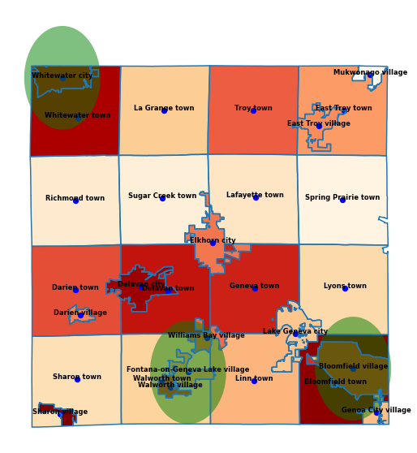

Section 7.9 Solving for Change
In this section, we will consider one additional variable and then demonstrate one possible solution which puts everything together. The solution presented here is similar to a solution presented to OAFC by Beloit College students in Spring of 2022.
Perhaps the most important variable we have not yet considered is the percentage of uninsured residents at or below \(200\%\) of the federal poverty line (FPL). We have seen the connection between health and poverty, and in fact this is the population that OAFC serves by law. We have saved this analysis for last because it will take some additional mathematical reasoning to estimate based on the data available.
The federal poverty line is determined based on household size, as shown in the table below.
| Household size | FPL | 2*FPL |
|---|---|---|
| 1 | $12,880 | $25,760 |
| 2 | $17,420 | $34,840 |
| 3 | $21,960 | $43,920 |
| 4 | $26,500 | $53,000 |
| 5 | $31,040 | $62,080 |
| 6 | $35,580 | $71,160 |
| 7 | $40,120 | $80,240 |
| 8 | $44,660 | $89,320 |
Note that the poverty line increases by \($4,540\) for each additional member of the household, and \(200\%\) of the poverty line increases by \($9,080\) per person. This suggests a linear relationship between the number of people per household (call this \(x\)), and the value of \(200\%\) FPL (call this \(y\)). We know that the equation of a line takes the form \(y=mx+b\text{.}\) Plugging in \(m=9080\) and any point on the line (say \(x=1\) and \(y=25760\)) allows us to find \(b\text{.}\) Indeed, \(25760=9080*1+b\) has the solution \(b=16680\text{.}\) Thus we have an equation for the value of \(200\%\) FPL based on household size:
\begin{equation*}
y=9080x+16680\text{.}
\end{equation*}
We can combine this data with data from the American Community Survey at census.gov to estimate what value "\(200\%\) of the federal poverty line" should take based on the average household size in each municipality.
| Municipality | Average household size \((x)\) | \(200\%\) FPL \((y=9080x+16680)\) |
|---|---|---|
| Bloomfield village | 3.06 | 44464.8 |
| Bloomfield town | 2.71 | 41286.8 |
| Darien village | 2.49 | 39289.2 |
| Darien town | 2.8 | 42104 |
| Delavan city | 2.45 | 38926 |
| Delavan town | 2.38 | 38290.4 |
| East Troy village | 2.16 | 36292.8 |
| East Troy town | 2.78 | 41922.4 |
| Elkhorn city | 2.42 | 38653.6 |
| Fontana-on-Geneva Lake village | 2.24 | 37019.2 |
| Geneva town | 2.4 | 38472 |
| Genoa City village | 2.55 | 39834 |
| Lafayette town | 2.45 | 38926 |
| La Grange town | 2.46 | 39016.8 |
| Lake Geneva city | 2.09 | 35657.2 |
| Linn town | 2.4 | 38472 |
| Lyons town | 2.4 | 38472 |
| Mukwonago village | 3.56 | 49004.8 |
| Richmond town | 2.18 | 36474.4 |
| Sharon village | 2.81 | 42194.8 |
| Sharon town | 2.38 | 38290.4 |
| Spring Prairie town | 2.77 | 41831.6 |
| Sugar Creek town | 2.48 | 39198.4 |
| Troy town | 2.77 | 41831.6 |
| Walworth village | 2.76 | 41740.8 |
| Walworth town | 2.45 | 38926 |
| Whitewater city | 2.55 | 39834 |
| Whitewater town | 2.48 | 39198.4 |
| Williams Bay village | 2.3 | 37564 |
What about uninsured residents? The ACS data at census.gov contains information about the percentage of uninsured residents by household in income intervals of \($25,000\text{,}\) but does not break this data down further based on where residents fall relative to the federal poverty line. That data is shown in the table below.
| Municipality | Income under $25K with no health insurance coverage (percentage as decimal) \((a)\) | Income $25K-$50K with no health insurance coverage (percentage as decimal) \((b)\) |
|---|---|---|
| Bloomfield village | 0.011516 | 0.015355 |
| Bloomfield town | 0.021956 | 0.045243 |
| Darien village | 0.005869 | 0.017606 |
| Darien town | 0 | 0.041551 |
| Delavan city | 0.010226 | 0.03701 |
| Delavan town | 0.006623 | 0.024976 |
| East Troy village | 0.008193 | 0.011236 |
| East Troy town | 0.010437 | 0.003479 |
| Elkhorn city | 0.005183 | 0.024153 |
| Fontana-on-Geneva Lake village | 0.005281 | 0.007921 |
| Geneva town | 0.025774 | 0.018581 |
| Genoa City village | 0.001682 | 0.008745 |
| Lafayette town | 0.002129 | 0.008515 |
| La Grange town | 0.003363 | 0.005979 |
| Lake Geneva city | 0.010659 | 0.007063 |
| Linn town | 0.001766 | 0.025786 |
| Lyons town | 0 | 0.002185 |
| Mukwonago village | 0 | 0 |
| Richmond town | 0 | 0.005842 |
| Sharon village | 0.01243 | 0.067744 |
| Sharon town | 0.002558 | 0.007673 |
| Spring Prairie town | 0 | 0 |
| Sugar Creek town | 0 | 0 |
| Troy town | 0.01452 | 0.028103 |
| Walworth village | 0.011115 | 0.029043 |
| Walworth town | 0 | 0.015207 |
| Whitewater city | 0.020959 | 0.023413 |
| Whitewater town | 0.002845 | 0.020626 |
| Williams Bay village | 0.010647 | 0.009464 |
The reason that that we went through the trouble of estimating what \(200\%\) FPL should be per municipality is that the ACS does not have more granular data about whether residents are above or below the poverty line (or \(200\%\) of it). So, we will have to estimate.
How should the estimation work? We will have to make an assumption about the percentage of households that fall below the thresholds calculated in Figure 7.9.2. One of the simplest things we could do is to assume that the distribution of incomes is uniform within each income bracket. Under that assumption, and based on the fact that all values lie between \($25,000\) and \($50,000\text{,}\) we can estimate the percentage of uninsured households lying below \(200\%\) FPL as follows:
Let’s continue to call the variable representing \(200\%\) of the FPL, \(y\text{.}\) Let’s call the variable representing the percentage of uninsured households making under \($25,000\text{,}\) \(a\) and the percentage of uninsured households making betwen \($25,000\) and \($50,000\text{,}\) \(b\text{.}\) Since \(25000\leq y \leq 50000\text{,}\) we can estimate the percentage of uninsured households under \(200\%\) FPL, which we can call \(z\text{,}\) by adding \(a\) to a certain fraction of \(b\text{.}\) That fraction of \(b\text{,}\) which we can call \(r\text{,}\) should be how "far" \(y\) is along the way from \(25000\) to \(50000\text{.}\) If \(y=50000\text{,}\) then \(r\) should be \(1\text{,}\) and if \(y=25000\text{,}\) then \(r\) should be \(0\text{.}\) Right in the middle, when \(y=37500\text{,}\) we should have \(r=\frac{1}{2}\text{.}\) In fact, there is another linear relationship here:
\begin{equation*}
r=\frac{y-25000}{25000}.
\end{equation*}
Now that we have \(r\text{,}\) the formula for \(z\) is simply
\begin{equation*}
z=a+rb\text{.}
\end{equation*}
Computing this for all municipalities gives the table below.
| Municipality | Percentage as decimal of households which are uninsured and under \(200\%\) FPL \((z)\) |
|---|---|
| Bloomfield village | 0.02347128016 |
| Bloomfield town | 0.0514305477 |
| Darien village | 0.01593202621 |
| Darien town | 0.02842753216 |
| Delavan city | 0.0308420504 |
| Delavan town | 0.01990064122 |
| East Troy village | 0.01326843603 |
| East Troy town | 0.01279192118 |
| Elkhorn city | 0.01837401603 |
| Fontana-on-Geneva Lake village | 0.009089163328 |
| Geneva town | 0.03578692928 |
| Genoa City village | 0.0068709332 |
| Lafayette town | 0.0068721956 |
| La Grange town | 0.006715257888 |
| Lake Geneva city | 0.01366987214 |
| Linn town | 0.01566155968 |
| Lyons town | 0.0011774528 |
| Mukwonago village | 0 |
| Richmond town | 0.002681337792 |
| Sharon village | 0.05902378125 |
| Sharon town | 0.006637089568 |
| Spring Prairie town | 0 |
| Sugar Creek town | 0 |
| Troy town | 0.03344073819 |
| Walworth village | 0.03056312218 |
| Walworth town | 0.00847090728 |
| Whitewater city | 0.03485133768 |
| Whitewater town | 0.01455924794 |
| Williams Bay village | 0.01540322784 |
Subsection 7.9.1 Final model
Let’s put everything together in one final model. We’ll use three variables to create a parametric linear model of medical need, suppose that each clinic serves an effective coverage radius of \(4500\) meters, and choose a placement which maximize the total amount of need met.
Let’s take the variables \(\bar{x}\) (the normalized percentage of working individuals who do not have a car) and \(\bar{y}\) (the normalized percentage of individuals who self-identify as Hispanic or Latino) from Section 7.7, and the variable \(\bar{z}\) which estimates the normalized percentage of households which are uninsured and at or below \(200\%\) FPL. We’ll combine all of three of these into a parametric linear model where \(\bar{x}\text{,}\) \(\bar{y}\text{,}\) and \(\bar{z}\) are each weighted at \(\frac{1}{3}\) (in practice, we would give OAFC the freedom to adjust these weights - for instance, they may decide that \(\bar{z}\) should be given more weight). This gives the table below.
| Municipality | Normalized percentage of working households with no vehicle available as decimal \((\bar{x})\) | Normalized percentage of individuals identifying as Hispanic/Latino as decimal \((\bar{y})\) | Normalized percentage of uninsured households under \(200\%\) FPL as decimal \((\bar{z})\) | Final percentage of need as decimal \((\frac{1}{3}\bar{x}+\frac{1}{3}\bar{y}+\frac{1}{3}\bar{z})\) |
|---|---|---|---|---|
| Bloomfield village | 0.0489 | 0.0661 | 0.0455 | 0.0535 |
| Bloomfield town | 0 | 0.0915 | 0.0997 | 0.0637 |
| Darien village | 0 | 0.0506 | 0.0309 | 0.0272 |
| Darien town | 0.0089 | 0.0588 | 0.0551 | 0.0409 |
| Delavan city | 0.0752 | 0.0763 | 0.0598 | 0.0704 |
| Delavan town | 0.1099 | 0.0298 | 0.0386 | 0.0594 |
| East Troy village | 0.055 | 0.0056 | 0.0257 | 0.0288 |
| East Troy town | 0.0468 | 0.0121 | 0.0248 | 0.0279 |
| Elkhorn city | 0.0289 | 0.05 | 0.0356 | 0.0382 |
| F-o-G Lake village | 0.0682 | 0.005 | 0.0176 | 0.0303 |
| Geneva town | 0.0329 | 0.0446 | 0.0694 | 0.0489 |
| Genoa City village | 0.0149 | 0.0436 | 0.0133 | 0.0239 |
| Lafayette town | 0.0114 | 0.0063 | 0.0133 | 0.0103 |
| La Grange town | 0.0357 | 0.0148 | 0.013 | 0.0212 |
| Lake Geneva city | 0 | 0.0314 | 0.0265 | 0.0193 |
| Linn town | 0.0127 | 0.0193 | 0.0304 | 0.0208 |
| Lyons town | 0.0555 | 0.0076 | 0.0023 | 0.0218 |
| Mukwonago village | 0 | 0 | 0 | 0 |
| Richmond town | 0 | 0.0231 | 0.0052 | 0.0094 |
| Sharon village | 0.025 | 0.1024 | 0.1144 | 0.0806 |
| Sharon town | 0.0125 | 0.0216 | 0.0129 | 0.0157 |
| Spring Prairie town | 0 | 0.0041 | 0 | 0.0014 |
| Sugar Creek town | 0 | 0.0058 | 0 | 0.0019 |
| Troy town | 0.0361 | 0.0092 | 0.0648 | 0.0367 |
| Walworth village | 0 | 0.0802 | 0.0592 | 0.0465 |
| Walworth town | 0 | 0.0381 | 0.0164 | 0.0182 |
| Whitewater city | 0.0736 | 0.0348 | 0.0676 | 0.0587 |
| Whitewater town | 0.1773 | 0.032 | 0.0282 | 0.0792 |
| Williams Bay village | 0.0707 | 0.0353 | 0.0299 | 0.0453 |
Finally, we will assume that each mobile clinic has an effective coverage radius of \(r=4500\) meters, and we will use a computer to test all \(29C3=3654\) possible clinic placements. We will choose one of them which maximizes the total need covered.
The figure below shows an optimal solution which was found by a computer. This solution involves placing the clinics at the three locations of Whitewater city, Delavan city, and Bloomfield village. The municipalities covered by this placement (those whose centroids fall within one of the green disks) are Bloomfield village, Bloomfield town, Fontana-on-Geneva Lake village, Walworth village, Walworth town, Whitewater city, Whitewater town, and Williams Bay village. Adding up their percentages of need from table Figure 7.9.5, we see that this optimal solution covers \(\approx 40 \%\) of the need in the county.
